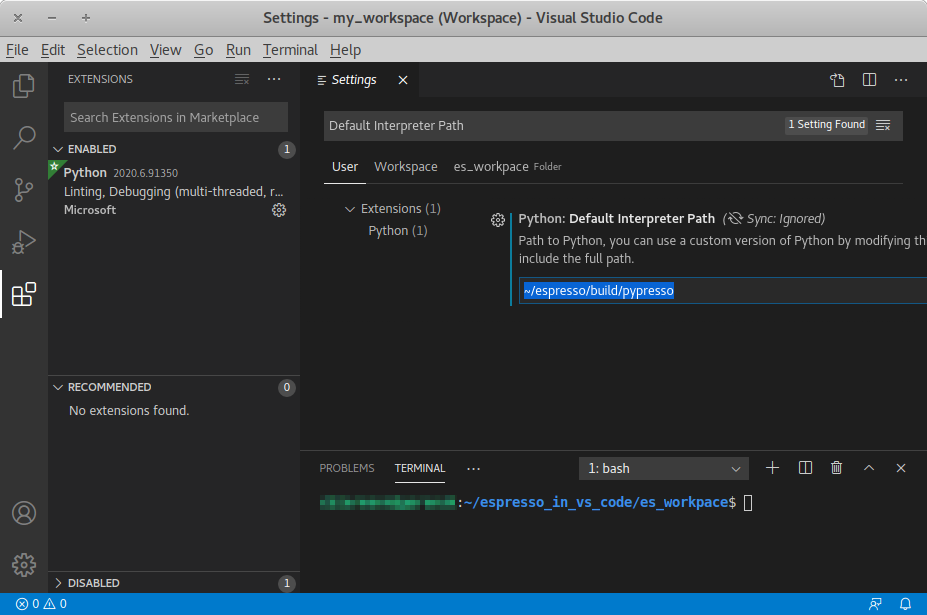

3. Running a simulation¶
ESPResSo is implemented as a Python module. This means that you need to write a python script for any task you want to perform with ESPResSo. In this chapter, the basic structure of the interface will be explained. For a practical introduction, see the tutorials, which are also part of the distribution.
Most users should consider building and then installing ESPResSo locally. In this way, ESPResSo behaves like any regular Python package and will be recognized by the Python interpreter and Jupyter notebooks.
Most developers prefer the pypresso resp. ipypresso wrapper scripts,
which export the build folder into the $PYTHONPATH environment variable
and then call python resp. jupyter. They also introduce extra command
line options to help developers run simulations inside a debugger.
Command line examples in this chapter use the wrapper scripts instead of the
Python and Jupyter programs, although they are perfectly interchangeable
when not using a debugger.
3.1. Running ESPResSo¶
3.1.1. Running a script¶
To use ESPResSo, you need to import the espressomd module in your
Python script. To this end, the folder containing the python module
needs to be in the Python search path. The module is located in the
src/python folder under the build directory.
A convenient way to run Python with the correct path is to use the
pypresso script located in the build directory:
./pypresso simulation.py
The pypresso script is just a wrapper in order to expose the ESPResSo python
module to the system’s Python interpreter by modifying the $PYTHONPATH.
If you have installed ESPResSo from a Linux package manager that doesn’t provide
the pypresso script, you will need to modify the $PYTHONPATH and
possibly the $LD_LIBRARY_PATH too, depending on which symbols are missing.
The next chapter, Setting up the system, will explain in more details how to write a simulation script for ESPResSo. If you don’t have any script, simply call one of the files listed in section Sample scripts.
3.1.2. Using the console¶
Since ESPResSo can be manipulated like any other Python module, it is possible
to interact with it in a Python interpreter. Simply run the pypresso
script without arguments to start a Python session:
./pypresso
Likewise, a Jupyter console can be started with the ipypresso script,
which is also located in the build directory:
./ipypresso console
The name comes from the IPython interpreter, today known as Jupyter.
3.1.3. Interactive notebooks¶
Tutorials are available as notebooks, i.e. they consist of a .ipynb
file which contains both the source code and the corresponding explanations.
They can be viewed, changed and run interactively. To generate the tutorials
in the build folder, do:
make tutorials
The tutorials contain solutions hidden inside disclosure boxes. Click on “Show solution” to reveal them.
To interact with notebooks, move to the directory containing the tutorials
and call the ipypresso script to start a local Jupyter session.
For JupyterLab users:
cd doc/tutorials
../../ipypresso lab
For Jupyter Classic users:
cd doc/tutorials
../../ipypresso nbclassic
For VS Code Jupyter users, no action is needed if pypresso was set as
the interpreter path (see details in Running inside an IDE).
You may then browse through the different tutorial folders. Files whose name
ends with extension .ipynb can be opened in the browser. Click on the Run
button to execute the current block, or use the keyboard shortcut Shift+Enter.
If the current block is a code block, the In [ ] label to the left will
change to In [*] while the code is being executed, and become In [1]
once the execution has completed. The number increments itself every time a
code cell is executed. This bookkeeping is extremely useful when modifying
previous code cells, as it shows which cells are out-of-date. It’s also
possible to run all cells by clicking on the “Run” drop-down menu, then on
“Run All Below”. This will change all labels to In [*] to show that the
first one is running, while the subsequent ones are awaiting execution.
You’ll also see that many cells generate an output. When the output becomes very long, Jupyter will automatically put it in a box with a vertical scrollbar. The output may also contain static plots, dynamic plots and videos. It is also possible to start a 3D visualizer in a new window, however closing the window will exit the Python interpreter and Jupyter will notify you that the current Python kernel stopped. If a cell takes too long to execute, you may interrupt it with the stop button.
Solutions cells are marked up with the code comment # SOLUTION CELL
(must be on the first line). In the build folder, these solution cells
will be automatically converted to Markdown cells.
To close the Jupyter session, go to the terminal where it was started and use the keyboard shortcut Ctrl+C twice.
You can find the official JupyterLab documentation at https://jupyterlab.readthedocs.io/en/latest/user/interface.html
3.1.4. Running inside an IDE¶
You can use an integrated development environment (IDE) to develop and run ESPResSo scripts. Suitable IDEs are e.g. Visual Studio Code and Spyder. They can provide a workflow superior to that of a standard text editor as they offer useful features such as advanced code completion, debugging and analysis tools etc. The following example shows how to setup ESPResSo in Visual Studio Code on Linux (tested with version 1.46.1). The process should be similar for every Python IDE, namely the Python interpreter needs to be replaced.
The pypresso executable can be set as a custom Python interpreter inside VS
Code. ESPResSo scripts can then be executed just like any other python script.
Inside VS Code, the Python extension needs to be installed. Next, click the
gear at the bottom left and choose Settings. Search for
Default Interpreter Path and change the setting to the path to your
pypresso executable, e.g.
~/espresso/build/pypresso
After that, you can open scripts and execute them with the keyboard shortcut Ctrl+F5.
Fig. Visual Studio Code interface shows the VS Code interface with the interpreter
path set to pypresso.
Note
You may need to set the path relative to your home directory, i.e. ~/path/to/pypresso.
{kind=link}

Visual Studio Code interface¶
3.1.5. Running in the cloud¶
A Gitpod config file is provided to automatically build ESPResSo in its default configuration (direct link), which is sufficient to run most tutorials. The Gitpod workspace can be accessed from the terminal via SSH or from a web browser, which uses the VS Code IDE.
To execute the tutorials, choose a Jupyter backend:
VS Code Jupyter: navigate to
ESPRESSO/build/doc/tutorialsin the project tree and open the notebook files; if the kernel drop-down menu doesn’t offerbuild/pypressoas a kernel, restart the VS Code IDE: quit the workspace by closing the browser tab, re-open the tab and clickespressomd-espresso-...in the popup to restart the IDE (don’t click on the green button “New Workspace”)Jupyter Notebook:
cd ${GITPOD_REPO_ROOT}/build/doc/tutorials ../../ipypresso notebook --NotebookApp.allow_origin="$(gp url 8888)" \ --port=8888 --no-browser
JupyterLab:
cd ${GITPOD_REPO_ROOT}/build/doc/tutorials ../../ipypresso lab --NotebookApp.allow_origin="$(gp url 8888)" \ --port=8888 --no-browser
For both Jupyter Notebook and JupyterLab, a notification will appear and say that a new port 8888 has been made available. Click the orange “Make public” button to open that port and then Ctrl+click one of the urls in the terminal output to open the Jupyter backed in a pop-up window.
To start a workspace from a specific branch, use a link in the following form:
https://gitpod.io/#https://github.com/user_name/espresso/tree/branch_name,
where user_name and branch_name need to be adapted.
3.2. Parallel computing¶
Many algorithms in ESPResSo are designed to work with multiple MPI ranks. However, not all algorithms benefit from MPI parallelization equally. Several algorithms only use MPI rank 0 (e.g. Reaction methods). ESPResSo should work with most MPI implementations on the market; see the MPI installation requirements for details.
3.2.1. General syntax¶
To run a simulation on several MPI ranks, for example 4, simply invoke
the pypresso script with the following syntax:
mpiexec -n 4 ./pypresso simulation.py
The cell system is automatically split among the MPI ranks, and data
is automatically gathered on the main rank, which means a regular ESPResSo
script can be executed in an MPI environment out-of-the-box. The number
of MPI ranks can be accessed via the system n_nodes state property.
The simulation box partition is controlled by the cell system
node_grid property.
By default, MPI ranks are assigned in decreasing order, e.g. on 6 MPI ranks
node_grid is [3, 2, 1]. It is possible to re-assign the ranks by
changing the value of the node_grid property, however a few algorithms
(such as FFT-based electrostatic methods) only work for the default
partitioning scheme where values must be arranged in decreasing order.
# get the number of ranks
print(system.cell_system.get_state()["n_nodes"])
# re-assign the ranks
system.cell_system.node_grid = [2, 1, 3]
system.cell_system.node_grid = [6, 1, 1]
There are alternative ways to invoke MPI on pypresso, but they share
similar options. The number after the -n option is the number of ranks,
which needs to be inferior or equal to the number of physical cores on the
workstation. Command nproc displays the number of logical cores on the
workstation. For architectures that support hyperthreading, the number of
logical cores is an integer multiple of the number of physical cores,
usually 2. Therefore on a hyperthreaded workstation with 32 cores,
at most 16 cores can be used without major performance loss, unless
extra arguments are passed to the mpiexec program.
On cluster computers, it might be necessary to load the MPI library with
module load openmpi or similar.
3.2.2. Performance gain¶
Simulations executed in parallel with run faster, however the runtime won’t decrease linearly with the number of MPI ranks. MPI-parallel simulations introduce several sources of overhead and latency:
overhead of serializing, communicating and deserializing data structures
extra calculations in the LB halo
extra calculations in the ghost shell (see section Internal particle organization for more details)
latency due to blocking communication (i.e. a node remains idle while waiting for a message from another node)
latency due to blocking data collection for GPU (only relevant for GPU methods)
latency due to context switching
latency due to memory bandwidth
While good performance can be achieved up to 32 MPI ranks, allocating more than 32 ranks to a simulation will not always lead to significantly improved run times. The performance gain is highly sensitive to the algorithms used by the simulation, for example GPU methods rarely benefit from more than 8 MPI ranks. Performance is also affected by the number of features enabled at compile time, even when these features are not used by the simulation; do not hesitate to remove all features not required by the simulation script and rebuild ESPResSo for optimal performance.
Benchmarking is often the best way to determine the optimal number of MPI ranks for a given simulation setup. Please refer to the wiki chapter on benchmarking for more details.
Runtime speed-up is not the only appeal of MPI parallelization. Another benefit is the possibility to distribute a calculation over multiple compute nodes in clusters and high-performance environments, and therefore split the data structures over multiple machines. This becomes necessary when running simulations with millions of particles, as the memory available on a single compute node would otherwise saturate.
3.2.3. Communication model¶
ESPResSo was originally designed for the “flat” model of communication: each MPI rank binds to a logical CPU core. This communication model doesn’t fully leverage shared memory on recent CPUs, such as NUMA architectures, and ESPResSo currently doesn’t support the hybrid MPI+OpenMP programming model.
The MPI+CUDA programming model is supported, although only one GPU can be used for the entire simulation. As a result, a blocking gather operation is carried out to collect data from all ranks to the main rank, and a blocking scatter operation is carried out to transfer the result of the GPU calculation from the main rank back to all ranks. This latency limits GPU-acceleration to simulations running on fewer than 8 MPI ranks. For more details, see section GPU acceleration.
3.2.3.1. The MPI callbacks framework¶
When starting a simulation with \(n\) MPI ranks, ESPResSo will internally use MPI rank \(0\) as the head node (also referred to as the “main rank”) and MPI ranks \(1\) to \(n-1\) as worker nodes. The Python interface interacts only with the head node, and the head node forwards the information to the worker nodes.
To put it another way, all worker nodes are idle until the user calls a function that is designed to run in parallel, in which case the head node calls the corresponding core function and sends a request on the worker nodes to call the same core function. The request can be a simple collective call, or a collective call with a reduction if the function returns a value. The reduction can either:
combine the \(n\) results via a mathematical operation (usually a summation or a multiplication)
discard the result of the \(n-1\) worker nodes; this is done when all ranks return the same value, or when the calculation can only be carried out on the main rank but requires data from the other ranks
return the result of one rank when the calculation can only be carried out by a specific rank; this is achieved by returning an optional, which contains a value on the rank that has access to the information necessary to carry out the calculation, while the other \(n-1\) ranks return an empty optional
For more details on this framework, please refer to the Doxygen documentation
of the the C++ core file MpiCallbacks.hpp.
3.3. GPU acceleration¶
3.3.1. CUDA acceleration¶
Note
Feature CUDA required
ESPResSo is capable of delegating work to the GPU to speed up simulations. Not every simulation method profits from GPU acceleration. Refer to Available simulation methods to check whether your desired method can be used on the GPU. In order to use GPU acceleration you need a NVIDIA GPU and it needs to have at least compute capability 2.0. For more details, please refer to the installation section Nvidia GPU acceleration.
For more information please check espressomd.cuda_init.CudaInitHandle.
3.3.1.1. List available devices¶
To list available CUDA devices, call
espressomd.cuda_init.CudaInitHandle.list_devices():
>>> import espressomd
>>> system = espressomd.System(box_l=[1, 1, 1])
>>> print(system.cuda_init_handle.list_devices())
{0: 'GeForce RTX 2080', 1: 'GeForce GT 730'}
This method returns a dictionary containing the device id as key and the device name as its value.
To get more details on the CUDA devices for each MPI node, call
espressomd.cuda_init.CudaInitHandle.list_devices_properties():
>>> import pprint
>>> import espressomd
>>> system = espressomd.System(box_l=[1, 1, 1])
>>> pprint.pprint(system.cuda_init_handle.list_devices_properties())
{'seraue': {0: {'name': 'GeForce RTX 2080',
'compute_capability': (7, 5),
'cores': 46,
'total_memory': 8370061312},
1: {'name': 'GeForce GT 730',
'compute_capability': (3, 5),
'cores': 2,
'total_memory': 1014104064}}}
3.3.1.2. Select a device¶
When you start pypresso, the first GPU should be selected.
If you wanted to use the second GPU, this can be done
by setting espressomd.cuda_init.CudaInitHandle.device as follows:
>>> import espressomd
>>> system = espressomd.System(box_l=[1, 1, 1])
>>> system.cuda_init_handle.device = 1
Setting a device id outside the valid range or a device which does not meet the minimum requirements will raise an exception.
3.4. Instrumentation¶
3.4.1. Debugging¶
Exceptional situations occur in every program. If ESPResSo crashes with a fatal error, it is necessary to use a debugger to investigate the issue. The tool should be chosen depending on the nature of the bug. Most fatal errors fall into one of these categories:
segmentation fault: typically due to uninitialized pointers, dangling pointers and array accesses out of bounds
non-finite math: typically due to divisions by zero, square roots of negative numbers or logarithms of negative numbers
unhandled exception: always fatal when running with multiple MPI ranks
Many algorithms require parameters to be provided within valid ranges. Range checks are implemented to catch invalid input values and generate meaningful error messages, however these checks cannot always catch errors arising from an invalid combination of two or more features. If you encounter issues with a script, you can activate extra runtime checks by enabling C++ assertions. This is achieved by updating the CMake project and rebuilding ESPResSo with:
cmake . -D CMAKE_BUILD_TYPE=RelWithAssert
make -j$(nproc)
./pypresso script.py
The resulting build will run slightly slower, but will produce an error message for common issues, such as divisions by zero, array access out of bounds, or square roots of negative numbers.
If this still doesn’t help, activate debug symbols to help with instrumentation:
cmake . -D CMAKE_BUILD_TYPE=Debug
make -j$(nproc)
./pypresso script.py 2>&1 | c++filt
The resulting build will be quite slow but segmentation faults will generate
a complete backtrace, which can be parsed by c++filt to demangle symbol
names. If this is not sufficient to track down the source of the error,
a debugging tool like GDB can be attached to ESPResSo to catch the segmentation
fault signal and generate a backtrace. See using GDB for more details.
If you are dealing with a segmentation fault or undefined behavior, and GDB doesn’t help or is too cumbersome to use (e.g. in MPI-parallel simulations), you can as a last resort activate sanitizers:
cmake . -D ESPRESSO_BUILD_WITH_ASAN=ON \
-D ESPRESSO_BUILD_WITH_UBSAN=ON \
-D CMAKE_BUILD_TYPE=RelWithAssert
make -j$(nproc)
./pypresso script.py
The resulting build will be around 5 times slower that a debug build, but it will generate valuable reports when detecting fatal exceptions.
If you are dealing with non-finite math errors (infinity, NaN, etc.), you can interrupt code execution at the first occurence of a non-finite value using floating-point exceptions and investigate the failing mathematical operation in GDB.
It is possible to attach an external debugger to pypresso, albeit with
a custom syntax. The pypresso executable file is actually not a program
but a script which sets the Python path appropriately and starts the Python
interpreter with user-defined arguments. Thus it is not possible to directly
run pypresso in a debugger; instead one has to use pre-defined command
line options:
./pypresso --tool script.py
where --tool can be any tool from the table below.
Only one tool can be used at a time. Some tools benefit from specific build
options, as outlined in the sections that follow. Most tools accept arguments
<args> via the following variant:
./pypresso --tool="<args>" script.py
The sequence or arguments is passed as a string, which will be split at whitespace characters by the shell interpreter. When the arguments need whitespaces or quotation marks, those need to be properly escaped. When no arguments are passed, sensible default values will be used instead.
Tool |
Effect |
|---|---|
|
|
|
|
|
|
|
|
|
|
|
|
|
|
3.4.2. Profiling¶
ESPResSo is designed to leverage highly parallel computing environments and GPU accelerators. To facilitate the investigation of communication bottlenecks and inefficient algorithms, several profilers are natively supported, with annotation markers placed in performance-critical parts of the C++ core.
3.4.3. GDB¶
Note
Requires a debug build, enabled with the CMake option
-D CMAKE_BUILD_TYPE=Debug, as well as an external dependency:
sudo apt install gdb
The GNU Debugger (GDB) [Stallman et al., 2011] is used to observe and control the execution of C++ applications. GDB can catch signals, suspend the program execution at user-defined break points, expose the content of C++ variables and run C++ functions that have no side effects.
Here is a typical GDB session. Runs the failing simulation
with the pypresso --gdb flag to attach the process to GDB.
To catch a runtime error, use e.g. catch throw std::runtime_error.
To catch a specific function, use break followed by the function name
(answer yes to the prompt about pending the breakpoint), or alternatively
provide the absolute filepath and line number separated by a colon symbol.
For a segmentation fault, no action is needed since it is automatically
caught via the SIGSEV signal. Run the simulation with run and wait
for GDB to suspend the program execution. At this point, use bt to
show the complete backtrace, then use frame <n> with <n> the number
of the innermost frame that is located inside the ESPResSo source directory,
and finally use tui e to show the offending line in the source code
(tui d to hide the source code). Use up and down to move in
the backtrace. The value of local variables can be inspected by GDB.
For a self-contained example, see the GDB example.
It is possible to debug an MPI-parallel simulation script with GDB.
Keep in mind that contrary to a textbook example MPI application, where
all ranks execute the main function, in ESPResSo the worker nodes are idle
until the head node on MPI rank 0 delegates work to them. This means that
on MPI rank > 1, break points will only have an effect in code that can be
reached from a callback function whose pointer has been registered in the
MPI callbacks framework.
The following command runs a script with 2 MPI ranks and binds a terminal to each rank:
mpiexec -np 2 xterm -fa 'Monospace' -fs 12 -e ./pypresso --gdb simulation.py
It can also be done via ssh with X-window forwarding:
ssh -X username@hostname
mpiexec -n 2 -x DISPLAY="${DISPLAY}" xterm -fa 'Monospace' -fs 12 \
-e ./pypresso --gdb simulation.py
The same syntax is used for C++ unit tests:
mpiexec -np 2 xterm -fa 'Monospace' -fs 12 \
-e gdb src/core/unit_tests/EspressoSystemStandAlone_test
GDB example
To recreate a typical debugging session, let’s purposefully introduce a null
pointer dereference in the int integrate() function, like so:
int integrate(int n_steps, int reuse_forces) {
int test = *std::shared_ptr<int>();
Running any simulation should produce the following trace:
$ ./pypresso ../samples/lj_liquid.py 2>&1 | c++filt
*** Process received signal ***
Signal: Segmentation fault (11)
Signal code: Address not mapped (1)
Failing at address: (nil)
[ 0] /lib/x86_64-linux-gnu/libc.so.6(+0x42520)
[ 1] /home/user/espresso/build/src/core/espresso_core.so(integrate(int, int)+0x49)
[ 2] /home/user/espresso/build/src/core/espresso_core.so(integrate_with_signal_handler(int, int, bool)+0xaf)
Running in GDB should automatically catch the SIGSEV signal and allow us to inspect the code and the state of all local variables:
$ ./pypresso --gdb ../samples/lj_liquid.py
(gdb) run
Thread 1 "python3.10" received signal SIGSEGV, Segmentation fault.
in integrate (n_steps=20, reuse_forces=-1)
at /home/user/espresso/src/core/integrate.cpp:260
260 int test = *std::shared_ptr<int>();
(gdb) bt
#0 in integrate (n_steps=20, reuse_forces=-1)
at /home/user/espresso/src/core/integrate.cpp:260
#1 in integrate_with_signal_handler (n_steps=20, reuse_forces=-1,
update_accumulators=false)
at /home/user/espresso/src/core/integrate.cpp:484
#2 in ScriptInterface::Integrators::SteepestDescent::integrate (
this=..., params=std::unordered_map with 1 element = {...})
at /home/user/espresso/src/script_interface/integrators/SteepestDescent.cpp:44
(gdb) frame 0
#0 in integrate (n_steps=20, reuse_forces=-1)
at /home/user/espresso/src/core/integrate.cpp:260
260 int test = *std::shared_ptr<int>();
(gdb) tui e
┌─/home/user/espresso/src/core/integrate.cpp───────────────────────────────────┐
│ 257 } │
│ 258 │
│ 259 int integrate(int n_steps, int reuse_forces) { │
│ > 260 int test = *std::shared_ptr<int>(); │
│ 261 │
│ 262 // Prepare particle structure and run sanity checks │
│ 263 on_integration_start(time_step); │
└──────────────────────────────────────────────────────────────────────────────┘
(gdb) print n_steps
$1 = 20
(gdb) ptype time_step
type = double
3.4.4. CUDA-GDB¶
Note
Requires a CUDA debug build, enabled with the CMake options
-D ESPRESSO_BUILD_WITH_CUDA=ON -D CMAKE_BUILD_TYPE=Debug.
The CUDA-GDB debugger [NVIDIA, 2023] is used to observe and control the execution of CUDA applications. CUDA-GDB can catch signals, suspend the program execution at user-defined break points and expose values in CUDA variables. When a signal is caught inside a CUDA kernel, the stack trace only shows device function calls. When stepping into a CUDA kernel launch, the stack trace shows both host and device function calls.
3.4.5. ASAN¶
Note
Requires specific compiler and linker flags, enabled with the CMake option
-D ESPRESSO_BUILD_WITH_ASAN=ON -D CMAKE_BUILD_TYPE=RelWithAssert.
The AddressSanitizer (ASAN) [Serebryany et al., 2012] is a memory error detection tool. It detects memory leaks and bugs caused by dangling references.
For more details, please consult the tool online documentation [5].
On some releases of the Linux kernel, ASAN fails to initialize when running
the executable due to address space layout randomization (ASLR) [10].
On affected environments, one can temporarily reduce the entropy via
sudo sysctl vm.mmap_rnd_bits=28 (default is usually 32 bits)
for the time of the ASAN analysis, and then revert back to the default value.
3.4.6. UBSAN¶
Note
Requires specific compiler and linker flags, enabled with the CMake option
-D ESPRESSO_BUILD_WITH_UBSAN=ON -D CMAKE_BUILD_TYPE=RelWithAssert.
The UndefinedBehaviorSanitizer (UBSAN) [LLVM Developers, 2017] is a detection tool for undefined behavior. It detects bugs caused by dangling references, array accesses out of bounds, signed integer overflows, etc.
For more details, please consult the tool online documentation [6].
3.4.7. FPE¶
Note
Requires specific compiler and linker flags, enabled with the CMake option
-D ESPRESSO_BUILD_WITH_FPE=ON -D CMAKE_BUILD_TYPE=Debug.
When abnormal mathematical operations take place at runtime,
for example divisions by zero, multiplication of infinity with zero,
square roots and logarithms of negative numbers, overflows, underflows,
or conversion of NaN values to integers, CPU flags may be raised.
The flags are known as CPU exceptions, and can be queried to detect
if a past operation yielded an abnormal result. They can be unmasked
to automatically trap, i.e. leave the user space and enter kernel space,
where the operating system will run a callback function, which may send
a POSIX signal such as SIGFPE or SIGILL. Those signals can be
captured by a user-defined signal handler, which takes the form of a
C++ function with strict restrictions on which operations it can execute,
and are typically assigning an integer into a global variable for debugging.
Execution then resumes in user space on the exact same instruction that
originally trapped, potentially entering an infinite loop.
C libraries like GNU libc provide support for floating-point exceptions (FPE or FE). These can be unmasked to interrupt ESPResSo on the first occurrence of an abnormal floating-point operation. This is achieved by sending a signal that can be caught in GDB to allow inspection of the failing code.
When FPE instrumentation is enabled, most script interface calls will be monitored for abnormal mathematical operations. One can select which subset of CPU exceptions will trap by explicitly providing a bitmask to the FPE handler constructor, like so:
Variant ObjectHandle::call_method(const std::string &name,
const VariantMap ¶ms) {
if (m_context)
m_context->notify_call_method(this, name, params);
#ifdef FPE
auto const trap = fe_trap::make_shared_scoped(FE_DIVBYZERO | FE_INVALID);
#endif
return this->do_call_method(name, params);
}
For more details, see annex F IEC 60559 “floating-point arithmetic” in ISO/EIC 9899 [International Organization for Standardization and International Electrotechnical Commission, 1999] and chapter 7 “Exceptions and default exception handling” in ISO/IEC 60559:2020(E) [International Organization for Standardization et al., 2020].
3.4.8. Caliper¶
Note
Requires external features CALIPER, enabled with the CMake option
-D ESPRESSO_BUILD_WITH_CALIPER=ON.
Caliper [1] [Boehme et al., 2016] is a low-overhead annotation library for C++. By default, ESPResSo comes with several markers in performance-critical parts of the main integration loop.
In the example below, a P3M simulation is profiled to reveal that the short-range loop (N-squared summation for Lennard-Jones and Coulomb) and long-range forces (FFT summation) contribute equally to the runtime:
$ CALI_CONFIG=runtime-report ./pypresso ../samples/p3m.py --cpu
Path Min time/rank Max time/rank Avg time/rank Time %
integrate 0.13 0.13 0.13 0.52
Integration loop 1.49 1.49 1.49 6.03
calculate_forces 1.14 1.14 1.14 4.62
copy_particles_to_GPU 0.01 0.01 0.01 0.03
init_forces 0.14 0.14 0.14 0.56
calc_long_range_forces 8.78 8.78 8.78 35.66
short_range_loop 10.77 10.77 10.77 43.76
copy_forces_from_GPU 0.02 0.02 0.02 0.08
For the GPU implementation of the P3M algorithm, the long-range force calculation is cheaper, however the transfer of particle data to and from the GPU incur additional costs that are not negligible:
$ CALI_CONFIG=runtime-report ./pypresso ../samples/p3m.py --gpu
Path Min time/rank Max time/rank Avg time/rank Time %
integrate 0.42 0.42 0.42 1.03
Integration loop 0.50 0.50 0.50 1.22
calculate_forces 0.62 0.62 0.62 1.51
copy_particles_to_GPU 0.27 0.27 0.27 0.66
init_forces 0.09 0.09 0.09 0.22
calc_long_range_forces 0.60 0.60 0.60 1.46
short_range_loop 0.85 0.85 0.85 2.06
copy_forces_from_GPU 1.06 1.06 1.06 2.58
For a more fine-grained report on GPU kernels:
$ CALI_CONFIG=cuda-activity-report ./pypresso ../samples/p3m.py --gpu
To introduce custom markers at the C++ level, add CALI macros inside
performance-critical functions to register them:
void force_calculation(CellStructure &cell_structure, double time_step) {
#ifdef CALIPER
CALI_CXX_MARK_FUNCTION;
#endif
/* ... */
}
To introduce custom markers at the Python level,
use a Caliper object to fence code blocks:
import espressomd.profiler
cali = espressomd.profiler.Caliper()
cali.begin_section(label="calc_energies")
energies = system.analysis.energy()
cali.end_section(label="calc_energies")
3.4.9. Valgrind¶
Note
Requires external features VALGRIND and debug symbols,
enabled with the CMake options
-D ESPRESSO_BUILD_WITH_VALGRIND=ON -D CMAKE_BUILD_TYPE=RelWithDebInfo,
as well as external dependencies:
sudo apt install valgrind kcachegrind graphviz
python3 -m pip install gprof2dot
The Valgrind [2] [Nethercote and Seward, 2003, Nethercote and Seward, 2007] framework brings several tools to examine a program runtime performance.
3.4.9.1. Callgrind¶
The Callgrind [3] [Weidendorfer et al., 2004] tool generates a graph of function calls. This type of instrumentation has a lot of overhead, therefore the time spent in functions might not always be reliable, and the program execution is slowed down significantly. To remediate the latter, it is common to restrict instrumentation to a specific part of the code using markers. By default, ESPResSo comes with markers in the integration loop, which is the most performance-critical part of the core.
In the following example, the P3M algorithm is profiled to generate a call
graph that can be converted to a static graph using gprof2dot and dot:
./pypresso --valgrind="--tool=callgrind --instr-atstart=no" ../samples/p3m.py --cpu
callgrind_out=$(ls -t -1 callgrind.out.*[[:digit:]] | head -1)
python3 -m gprof2dot --format=callgrind --output=${callgrind_out}.dot ${callgrind_out}
dot -Tpdf ${callgrind_out}.dot -o ${callgrind_out}.pdf
The Valgrind output file generally follows the pattern callgrind.out.pid,
where pid is the actual process id. The ${callgrind_out} variable
is populated with the return value of a subshell command that finds the most
recent output file that matches that pattern.
It is also possible to open the output file in KCachegrind [4] to browse the call graph interactively and visualize the time spent in each function:
kcachegrind ${callgrind_out}
3.4.10. Compute Sanitizer¶
Note
Requires a CUDA build, enabled with the CMake options
-D ESPRESSO_BUILD_WITH_CUDA=ON.
The Compute Sanitizer [9] [NVIDIA, 2023] framework is similar to Valgrind, but for NVIDIA GPUs. The exact command line options differ with the CUDA version. If the command line examples below don’t work, please refer to the NVIDIA user guide version that corresponds to the locally installed CUDA toolkit.
To detect memory leaks:
./pypresso --cuda-sanitizer="--tool memcheck --leak-check full" script.py
Add option --error-exitcode 1 to return an error code when issues are detected.
To detect access to uninitialized data:
./pypresso --cuda-sanitizer="--tool initcheck" script.py
Checking for uninitialized data is quite expensive for the GPU and can slow down other running GPU processes.
3.4.11. perf¶
Note
Requires debug symbols, enabled with the CMake option
-D CMAKE_BUILD_TYPE=DebugOptimized,
as well as external dependencies. On Ubuntu:
sudo apt install linux-tools-generic
On Debian:
sudo apt install linux-perf
On Fedora:
sudo apt install perf
The perf [7] [Torvalds, 2009] tool generates a graph of function calls with time measurements. It requires privileges that can only be set as root.
In the following example, the P3M algorithm is profiled to generate a call
graph in a file called perf.data, which is then read to generate a report:
original_value=$(sysctl -n kernel.perf_event_paranoid)
sudo sysctl -w kernel.perf_event_paranoid=3
perf record --call-graph dwarf ./pypresso ../samples/p3m.py --cpu
sudo sysctl -w kernel.perf_event_paranoid=${original_value}
perf report --call-graph
When inside the report, press / to search for a function name,
e.g. integrate, then highlight the symbol and press + to expand
its call graph. Press q to exit the program, or close open tabs.
A large amount of data will be written to disk during the recording step, typically several hundred megabytes. If the hard drive write latency is too high, the following warning will be emitted:
Warning:
Processed 17655 events and lost 7 chunks!
Check IO/CPU overload!
Using a tmpfs drive, perf can write the file directly to RAM (mounted as a filesystem), which has better latency. To get a list of mounted tmpfs drives and their capacity:
$ mount | grep "tmpfs"
tmpfs on /dev/shm type tmpfs (rw,nosuid,nodev)
$ df -h /dev/shm/
Filesystem Size Used Avail Use% Mounted on
tmpfs 32G 320K 32G 1% /dev/shm
To use a tmpfs drive as storage:
perf record --call-graph dwarf -o /dev/shm/perf.data ../samples/p3m.py --cpu
perf report --call-graph -i /dev/shm/perf.data
rm /dev/shm/perf.data
3.4.12. kernprof¶
Note
Requires an external dependency:
python3 -m pip install line_profiler
kernprof [8] [Kern et al., 2008] is a low-overhead Python profiler.
It supports two instrumentation modes: line_profile and cProfile.
The --builtin option injects a LineProfiler object and a profile
function in the global namespace of the instrumented script.
The latter can be used as a decorator (@profile),
as a context manager (with profile:), or
as begin/end markers (profile.enable(), profile.disable())
to select the regions of code to instrument,
although the line_profile mode only supports the decorator behavior.
The line_profile mode cannot instrument code from imported modules,
whereas the cProfile mode can.
To make the instrumented script executable with and without kernprof when using decorators, add the following code at the top of the script:
if "line_profiler" not in dir():
def profile(func):
def wrapper(*args, **kwargs):
return func(*args, **kwargs)
return wrapper
To run kernprof in line_profile mode:
./pypresso --kernprof="--line-by-line --view" ../samples/p3m.py --cpu
To later view the results again:
python3 -m line_profiler p3m.py.lprof
To run kernprof in cProfile mode:
./pypresso --kernprof="" ../samples/p3m.py --cpu
To interactively read the data:
python3 -m pstats p3m.py.prof
p3m.py.prof% sort time
p3m.py.prof% reverse
p3m.py.prof% stats
ncalls tottime percall cumtime percall filename:lineno(function)
2 1.090 0.545 1.090 0.545 /opt/espressomd/integrate.py:156(run)
1 1.817 1.817 1.817 1.817 /opt/espressomd/electrostatics.py:71(_activate)
10 2.619 0.262 2.619 0.262 /opt/espressomd/integrate.py:101(run)
p3m.py.prof% quit